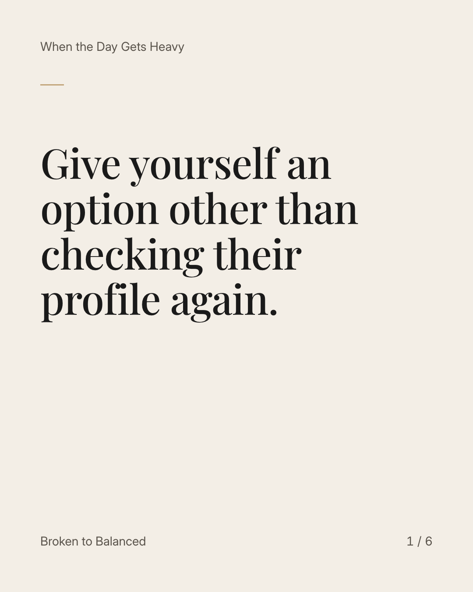
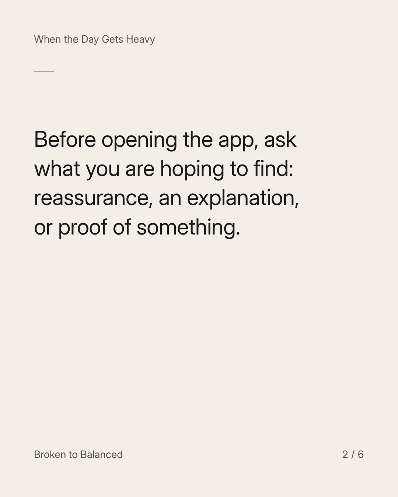
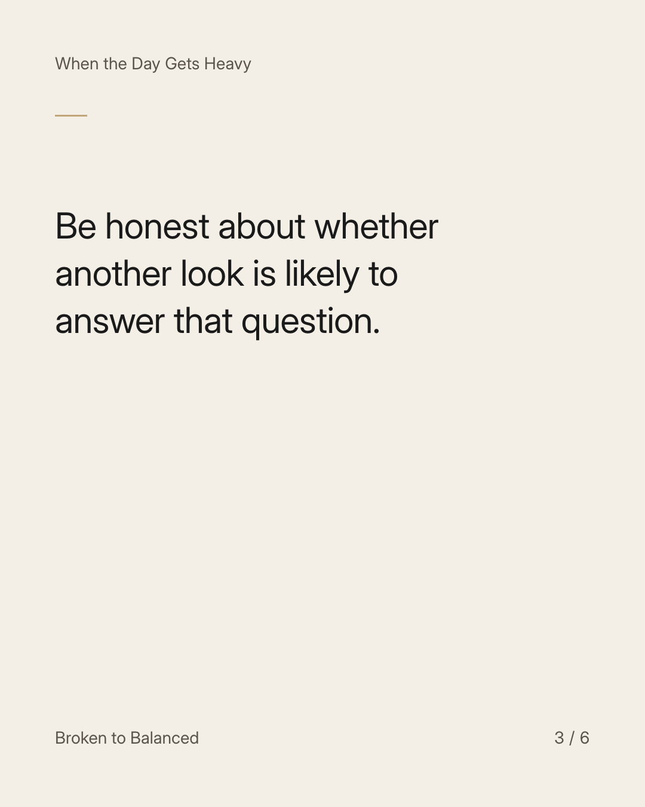
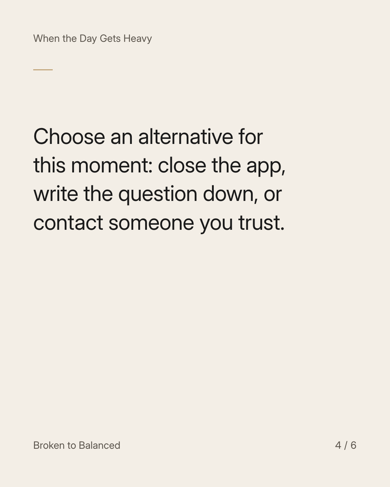
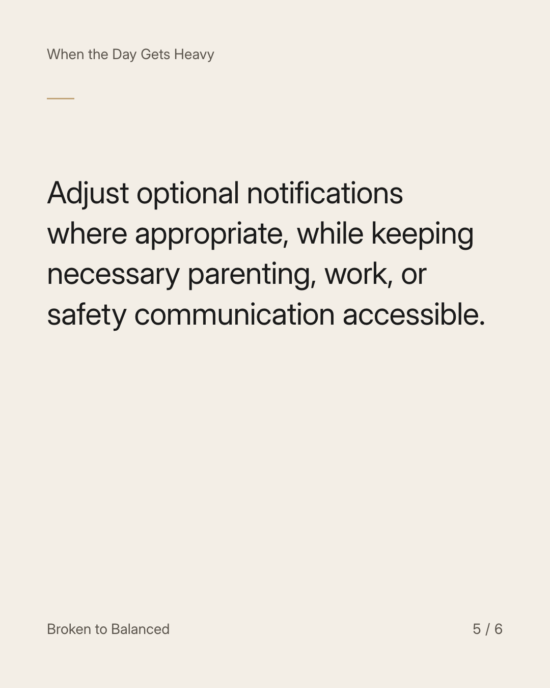
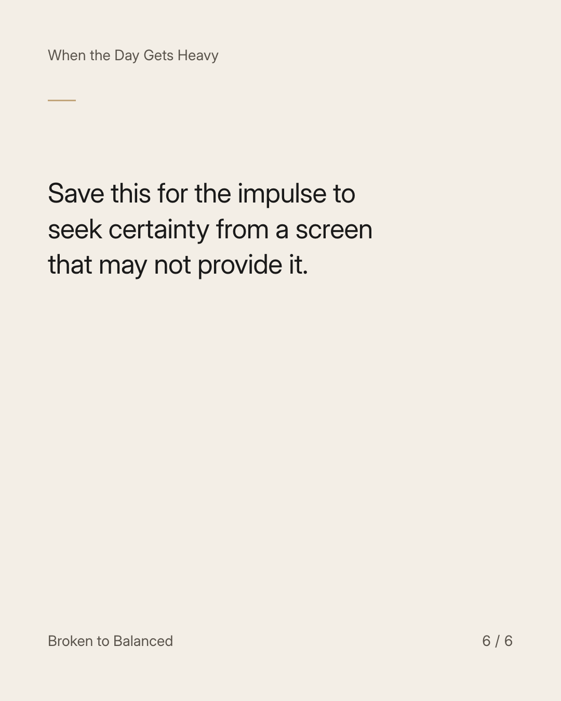

Exact text and accessibility text
Give yourself an option other than checking their profile again.
Slide 1 of 6. Give yourself an option other than checking their profile again.


Exact text and accessibility text
Before opening the app, ask what you are hoping to find: reassurance, an explanation, or proof of something.
Slide 2 of 6. Before opening the app, ask what you are hoping to find: reassurance, an explanation, or proof of something.


Exact text and accessibility text
Be honest about whether another look is likely to answer that question.
Slide 3 of 6. Be honest about whether another look is likely to answer that question.


Exact text and accessibility text
Choose an alternative for this moment: close the app, write the question down, or contact someone you trust.
Slide 4 of 6. Choose an alternative for this moment: close the app, write the question down, or contact someone you trust.


Exact text and accessibility text
Adjust optional notifications where appropriate, while keeping necessary parenting, work, or safety communication accessible.
Slide 5 of 6. Adjust optional notifications where appropriate, while keeping necessary parenting, work, or safety communication accessible.


Exact text and accessibility text
Save this for the impulse to seek certainty from a screen that may not provide it.
Slide 6 of 6. Save this for the impulse to seek certainty from a screen that may not provide it.
Exact caption
Plain-text fallback: select and copy the caption.